Analyse av nettstedet

På Google trends så jeg at flere ulike typer vintersko hadde blitt søkt på mye. Jeg har valgt å bruke nøkkelord Vintersko, Uggs og Moon boots. Jeg valgte de fordi det er sesong for det, og de er trendy som målgruppen av nettsiden er opptatt av. Jeg har også valgt å bruke nøkkelord Hoka og Nike siden disse er populære merker blant målgruppen.
SEO Analyse
Lighthouse analyse av forside
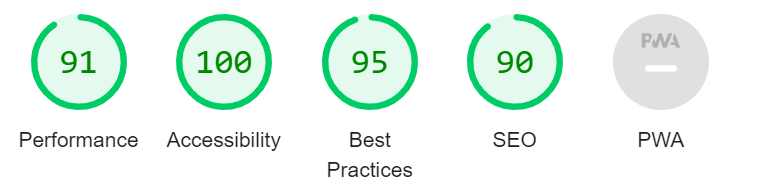på analysen sto det at jeg har mulighet til å spare 0.65s lastetid hvis jeg kutter ned elementer som tar unødvendig mye plass. det sto også at jeg kan sette en fast bredde og høyde på bildene for å forbedre CLS. Jeg bør også minimere store layout shifts ved å ta disse stegene vil jeg forbedre performence på nettsiden. Accessibility var bra med en perfektt 100 score. Det sto også at jeg manglet en Content Security Policy (CSP) som reduserer risiko for XSS angrep, siden nettstedet kun er lagt ut på skoleserveren er dette ikke viktig. På SEO fikk jeg advarsel om at siden ikke har Meta beskrivelse, Meta beskrivlse hjelper siden med å få mer trafikk, og får siden til å virke mer relevant i søke resultater. Noen av knappene er også ikke mobilvennlig siden størrelsen gjør de vanskelig å trykke på
Lighthouse analyse av produktside
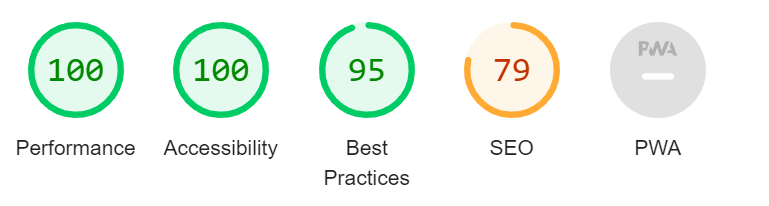På analysen sto det at jeg kunne forbedre performance ved å sette fast bredde og høyde på bildene. Accessability hadde en perfekt 100 score og ingen varslinger. På SEO sto det at siden ikke hadde en Meta beskrivelse, anchor taggene hadde ikke en href som førte til et sted, som gjør siden mindre crawl vennlig. Noen knapper var også vannskelig å trykke på for mobil som kan gjøre det vanskelig å navigere.
Lighthouse analyse av kasseside
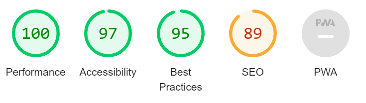På kassesiden fikk jeg varsling om at bildene ikke hadde en fast bredde og høyde. Siden kunne hatt bedre Accessability omg jeg ikke hadde hoppet over nivåer på heading. På SEO fikk jeg varsling om at siden ikke hadde en META beskrivelse, og at knappene ikke var mobilvennlige siden størrelsen ikke var riktig.
UU Analyse
webaim anlyse av forside
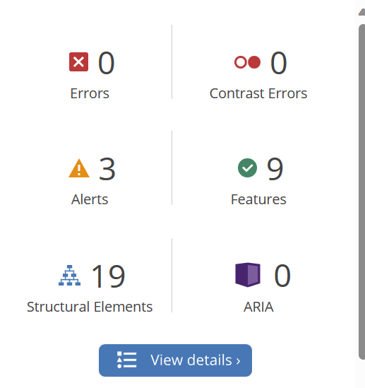forsiden på webaim hadde ingen errors men 3 varslinger. siden har 9 features som er bra, og 19 structural elements
varslinger fra analysen
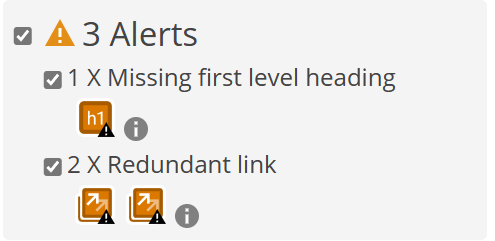varslingene var at jeg ikke hadde første nivå heading altså h1, jeg hadde også 2 linker som førte til samme side. grunnen til at h1 er viktig er at det gir siden struktur, det gir også siden navigasjon for brukere som bruker assisterende teknologi. to linker som fører til samme url fører til at tastatur og skjerm leser brukere får ekstra navigasjon
webaim anlyse av produktside
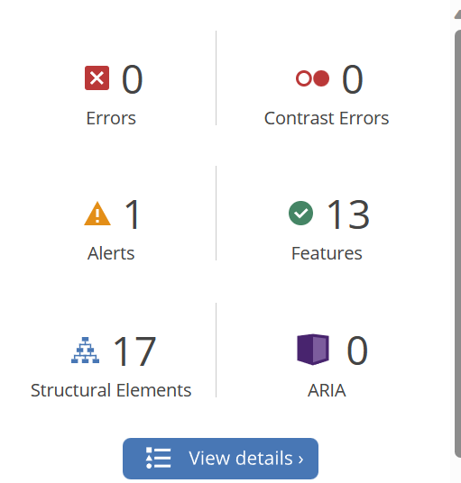produktsiden på webaim hadde ingen errors men 1 varsling. siden har 13 features som er bra, og 17 structural elements
varslinger fra analysen
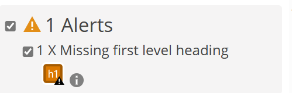varslingen var at jeg ikke hadde første nivå av heading altså h1
webaim anlyse av kasseside
.png)
kassesiden hadde en contrast error, 4 varslinger, 2 features og 21 structural elements
varslinger fra analysen
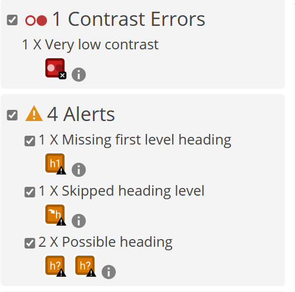Contrast error er fordi det ikke var stor nok forksjell på fargene mellom tekst og bakgrunn. varslingene var at jeg ikke har første nivå heading, og at jeg hoppet over et nivå av heading. å hoppe over et heading nivå er ikke bra, forid brukere som bruker assisterende teknologi kan få vanskligheter med å navigere når heading nivå er hoppet over. jeg fikk også to varslinger på at noe som ser ut som heading ikke er heading. Dette er ikke bra siden det ødelegger strukturen til nettsiden.
Anbefalinger fra Chatgpt
Jeg spurte chatgpt om å analysere koden basert på UU og SEO, jeg fikk anbefalinger om å forbedre SEO ved bruk av mer spesifike nøkkelord i title for eksempel å endre det fra "Ulriks Sko" til "Ulriks Sko - Online Shoe Store" Jeg fikk også anbefalt å legge til en META beskrivelse for å forbedre søkemotor resultater. Chat gpt anbefalte at jeg skulle sørge for at alle linker fører til relevante siden, og alt alt-tagggene hadde beskrivende og relevante nøkkelord. På produktsiden fikk jeg anbefalt å ha en mer beskrivende title for eksempel å endre fra "Ulriks sko" til "Ulriks sko - Men's shoes". Jeg ble anbefalt å ha mer tekstlig content for å beskrive produktene, og legge til en META beskrivelse. På Kassesiden ble jeg anbefalt og oppdatere title til noe mer beskrivende som "Ulriks sko - Checkout". Jeg ble også anbefalt å legge til mer content som guider brukerene gjennom checkout prossesen, og legge til en relevant META beskrivelse. jeg ble også anbefalt å ha bedre contrast mellom tekst og bakgrunn. For fobedret SEO ble jeg anbefalt å inkludere ARIA roller og atributter, lang atributtet er satt til en altså engelsk som ikke stemmer med nettsiden, dette ble jeg anbefalt å endre. Jeg spurte deretter Chatgpt om mer spesifike løsninger, jeg spurte hva Chatgpt ville valgt som META beskrivelse, her ble det forklart at META beskrivelsen bør inneholde relevante nøkkelord og beskrive innholdet til nettsiden på en konsis måte. Jeg ble også anbefalt å inkludere ARIA-label ved bruk av ikoner.
Sammenlikning av resultater
| Lighthouse | Webaim | Chatgpt |
|---|---|---|
| Legge til META beskrivlese | Juster størrelse på knapper | Ikke hoppe over heading nivåer |
| Første nivå heading | Linker som fører til samme side | Ikke hoppe over heading nivåer |
| Legge til nøkkelord | Legge til META beskrivelse | Juster størrelse på knapper |
Chatgpt og Lighthouse reagerer begge på at jeg ikke har med META beskrivelse, Webaim og Lighthouse reagerer begge at jeg har hoppet heading nivå. både chatgpt og Lighthouse reagerte på at knappene var får små ikke var mobilvennlige. Alt dette er noe jeg bør fikse på. Webaim har reagert på at jeg har to linker som fører til samme side, dette har ikke Lighthouse og Chatgpt reagert på, men er fortsatt noe jeg burde fikse. Webaim har også reagert på at jeg ikke har første nivå header (h1).
Forbedrende tiltak
- META beskrivelse
- ikke hoppe over heading nivåer
- ha med h1
- større knapper
- Mer beskrivende titler
- mer beskrivende alt tagger
- endre lang fra engelsk til norsk
- bedre kontrast på kassesiden
Resultater etter tiltak
Webaim resultater forside
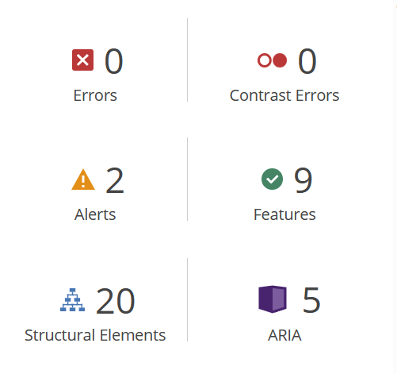etter å ha gjort forbedrende tiltak basert på hva analysene har reagert på har jeg 2 varslinger på webaim. disse er redundant links, jeg har bare en produktside så linken for shop herre og shop dame fører til samme side. Dette får jeg ikke endret på.
Webaim resultater produktside
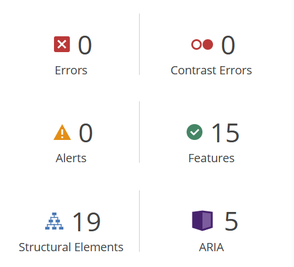jeg har ingen varslinger på produktsiden etter å ha tatt forberedende tiltak
Webaim resultater kasseside
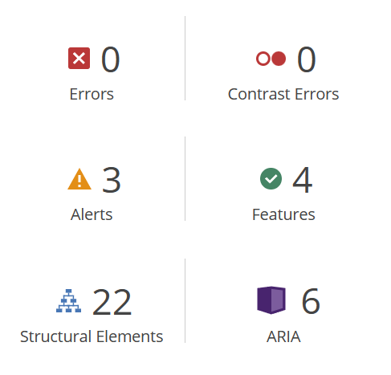etter å ha tatt forbedrende tiltak på kassesiden har jeg 3 varslinger på webaim disse er at jeg har hoppet over heading nivåer, og at jeg har to umulige heading nivåer. Dette har jeg endret på men webaim reagerer fortsatt på det
Lighthouse resultater forside
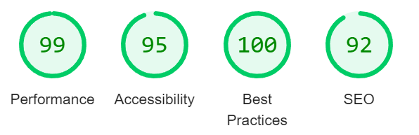etter å ha gjort forbedrende tiltak har jeg gått opp fra 91 til 99 score på performance, gått ned fra 100 til 95 på accessability, gått opp fra 95 til 100 på best practices og gått opp fra 90 til 92 på SEO.
Lighthouse resultater produktside
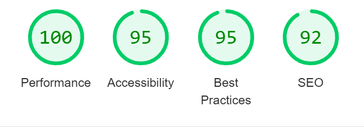etter å ha gjort forbedrende tiltak har jeg fortsatt 100 på preformance, jeg har gått ned fra 100 til 95 på accessability, jeg har holdt meg på 95 på best practices og jeg har gått opp fra 79 til 92 på SEO
Lighthouse resultater kasseside
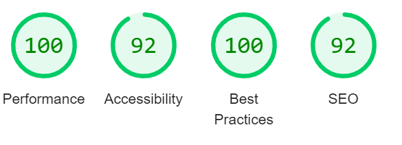etter å ha gjort forbedrende tiltak har jeg holdt meg på 100 performance, jeg har gått ned fra 97 til 92 på accessability, jeg har gått opp fra 95 til 100 på best practices. og jeg har gått opp fra 89 til 92 på SEO
på webaim har jeg gjort det jeg kan får å fjerne varslinger, jeg har også fått fjernet en contrast error på kassesiden, jeg har goså lagt til ARIA atributter.
På Lighthouse har jeg gått ned på accessability på noen av punktene, men alle mål var over 90 og derfor grønne som er en positiv ting.
Skjermleserstøtte micro og meta data
skjermleser støtte fungerte bra på nettstedet fra før av men jeg la til ARIA-labels for å gjøre det enda bedre. Nettsiden var også navigerbar med tastatur, dette sjekket jeg med å scrolle opp og ned med pil tastene og bruke tab for å navigere mellom content.
jeg la til fornuftig microdata på produktsiden ved å bruke itemprop, itemscope og itemtype tagger, jeg testet deretter dette på google sin rike resultater test, og det fungerte som det skal.
Jeg forbedret meta data med å ha mer beskrivende title tags for hver side. jeg la også til META beskrivelser i hver av sidene med relevante nøkkelord. Jeg la også til meta til sosiale medier